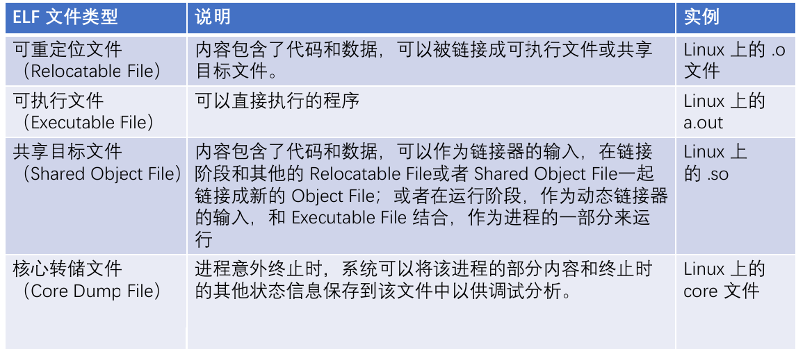
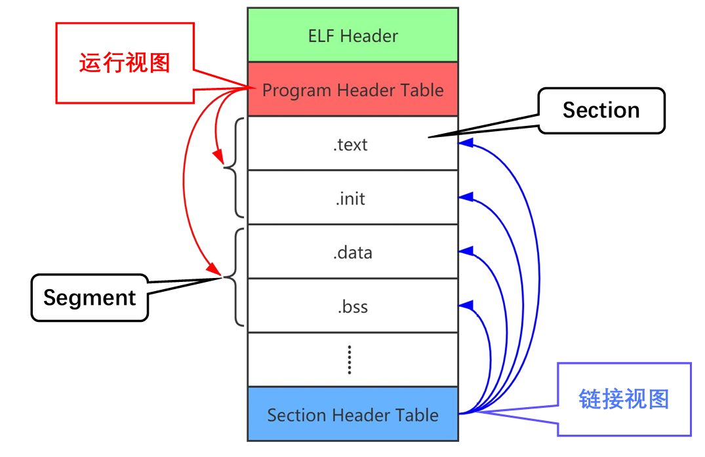
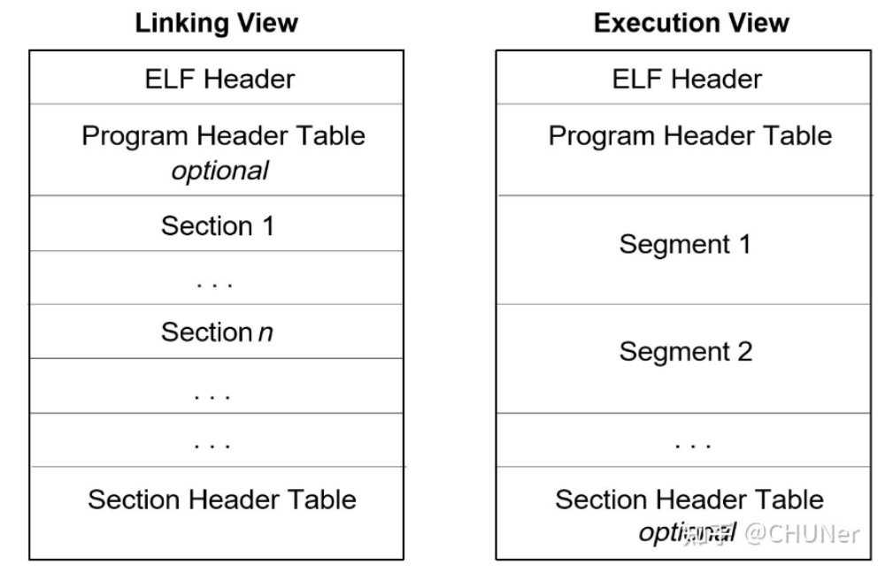
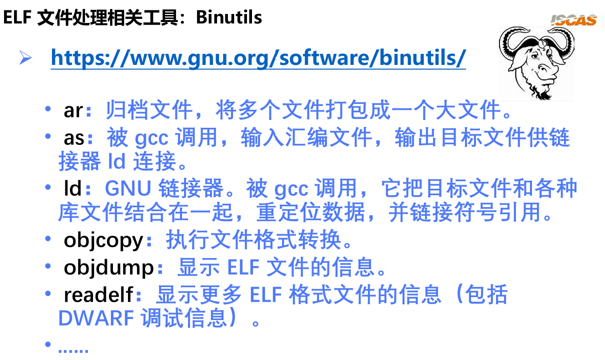

01 编译与调试
编译与调试
编译的流程
将一个.c程序编译成一个可执行文件通常包含4步：
- 预处理：将各种宏定义翻译成C/C++语言
- 编译：将C/C++代码编译成汇编语言
- 汇编：对汇编代码进行处理，翻译成机器指令
- 链接：将用到的库文件和自己的机器指令汇总到一起（合并不同文件的同类内容，如
.text节区）
从上图可以知道，只要加了
-g其实就可以调试代码了，不一定非要使用debug模式编译才行
动态/静态链接
内部/外部链接
ELF文件
定义：ELF（Excutable Linkable Format）是一种Unix-Like系统上二进制文件的标准，符合ELF标准的ELF文件可以分为4类：
不是所有Linux下的二进制文件都是ELF文件，必须符合一定的格式才行！
ELF文件都遵循以下的格式：
 ELF 文件的作用有两个，一是用于程序链接（为了生成程序）；二是用于程序执行。
针对这两种情况，可以从不同的视角来看待同一个目标文件。当它分别被用于链接和用于执行的时候，其特性必然是不一样的，我们所关注的内容也不一样。从链接和运行的角度，可以将 ELF 文件的组成部分划分为链接视图和运行视图这两种格式，重要组成部分如下：
- ELF Header：位于文件开始处，包含整个ELF文件的信息
- Section（节区）：供链接器或调试工具使用，以静态视角描述一个文件的逻辑组成。在每个节中包含有指令数据、符号数据、重定位数据等等，例如.text、.data、.bss节…
- Section Header Table：描述文件中各段的信息（如代码段、数据段等），通常用于链接阶段
- Segment（段）：供OS的加载器使用，以动态的视角描述一个文件如何加载到内存，包含多个节区
- Program Header Table：用于描述加载程序（如内核或动态链接器）如何将文件的各段加载到内存
对于可执行程序，Program Header是必须的，描述了不同的段即Segment，Section Header是可选的
对于链接程序，Program Header是可选的，Section Header是必须的，描述了不同的section
如何定义段和节区
- 法1.由链接脚本指定：
1 | SECTIONS { |
比如链接脚本代码就定义了一个段，里面包含了4个节区
- 法2.由gcc的一些指令在代码中定义新的节区
1 | int __attribute__((section(".profile"))) |
如果要精确控制新节区在内存中的位置，也要在链接脚本里写一下
ELF文件解析
虽然所有ELF文件都是按照这个格式排布的，但是不能直接通过查看一个二进制文件来分析（因为可读性太差），通常需要使用一些工具（比如binutils）来分析ELF文件
下面举一些例子来说明如何查看一个ELF文件：
- ELF Header：
readelf -h - Program Header Table：
readelf -l - Section Header Table：
readelf -S - 符号表：
readelf -s
符号表
1.符号表的定义
符号表是ELF文件中的一个节区==（.symtab 或 .dynsym）==，存储了程序中所有符号（包括定义的、引用的、导出的）的名称、类型、地址等信息
符号可以是：
- 函数名（如
main、printf） - 全局变量（如
int global_var;） - 静态变量（如
static int local_var;）
2.符号表的作用
- 链接阶段：帮助链接器找到符号的定义和引用关系
- 调试阶段：提供符号名到地址的映射（如
gdb调试时显示函数名） - 动态链接：支持运行时符号解析（如共享库中的函数）
3.符号表的引用：指的是使用代码中未定义的符号。编译阶段，如果遇到未定义的符号，会标成UDN，在链接的时候被绑定
4.符号导出：将符号标记为 可被其他模块访问 的过程。例如：
- 在库中导出函数供外部调用
- 在内核模块中导出符号供其他模块使用
实现方式
- C 语言：使用
extern或__attribute__((visibility("default"))) - Linux 内核：通过
EXPORT_SYMBOL()宏导出符号
| 概念 | 描述 | 示例 |
|---|---|---|
| 符号表 | 存储符号名称、类型和地址的 ELF 节区。 | .symtab, .dynsym |
| 符号引用 | 代码中使用的未定义符号，需链接器解析。 | extern int x; |
| 符号解析 | 将引用绑定到定义的链接过程。 | 将 printf 绑定到 libc.so |
| 符号导出 | 显式标记符号为外部可见。 | EXPORT_SYMBOL() |
5.为什么Linux内核模块中大部分函数要加static关键字?
- 早期Linux中，如果全局变量或函数不加static，会被注册到Linux运行时维护的全局的符号表中，那么很可能发生命名冲突之类的
- 现代Linux中，全局变量或函数即使不加static，默认也不会被注册到Linux运行时维护的全局的符号表中，只有显式导出时才会。所以一般的函数、变量不加
static也行
6.如何看内核的符号表
- 使用
readelf或nm分析vminux文件：它是未压缩的内核的ELF文件。包含所有符号（包括未加static的函数和变量），无论是否导出 - 查看内核运行时动态的符号表：该符号表不包含没被导出的符号
1 | cat /proc/kallsyms | grep "函数名" # 按符号名查找 |